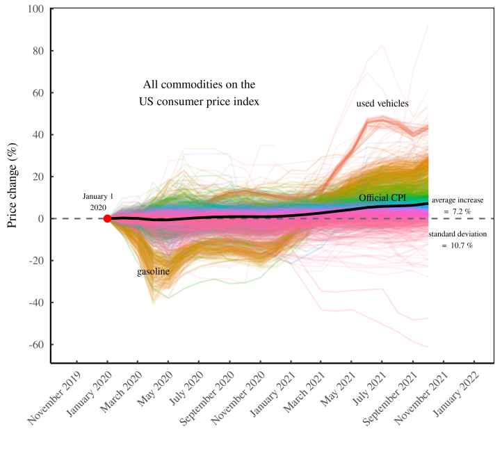

36 Money
Money is formalized debt. Informal debt, ie. favour-based, or gift economies, CAN be ecologically sustainable. But by formalizing this kind of social obligation and cohesion, we necessarily commoditize our social ecologies. Formalization leads to ecological unsustainability. (BichlerNitzan tweet)
Money is, above all, a subtle device for linking the present to the future (Keynes)
36.1 Money Creation
Addiction
Bank of England ‘addicted’ to creating money, say peers. The Bank of England risks becoming addicted to creating money and needs to come clean about how it plans to unwind its £895bn bond-buying programme, the House of Lords has warned. Guardian
McLeay (2014) Money Creation in the Modern Economy (pdf)
The value of money depends on not creating too much of them relative to future value creation. (Pengenes verdi henger på at det ikke lages for mye av dem i forhold til fremtidig verdiskaping.)
Bankplassen: Hvordan skapes penger (‘How money is created’ in Norwegian)
36.2 Inflation
Monetarist theory, which came to dominate economic thinking in the 1980s and the decades that followed, holds that rapid money supply growth is the cause of inflation. The theory, however, fails an actual test of the available evidence. In our review of 47 countries, generally from 1960 forward, we found that more often than not high inflation does not follow rapid money supply growth, and in contrast to this, high inflation has occurred frequently when it has not been preceded by rapid money supply growth.
There are several implications. The most relevant of these seems to be that the current efforts of central banks to engender inflation are unlikely to be successful.
Based on our examination of countries that together constitute 91 percent of world GDP, we suggest that high inflation has infrequently followed rapid money supply growth, and in contrast to this, high inflation has occurred often when it has not been preceded by rapid money supply growth. The U.S. economy may well experience some increase in inflation in the coming year, but if it does, it is likely it will be due to factors other than monetary policy.
36.2.1 FED Policy and Inflation
When you view money supply and velocity together, one notices they tend to offset each other. However, we highlight the late 1970s, the last highly inflationary period, to show a period they did not counteract each other.

The Fed and Treasury are playing a dangerous game. The numbers we discuss above are massive and dwarf anything seen in American history. If consumers start spending their savings, and the government keeps borrowing and spending unprecedented amounts, velocity can pick up rapidly. We leave you with a vital question to better understand the prospects for inflation.

36.3 Inflation as Restructuring
Fix
In the hands of economists, the idea of an ‘average price level’ is, to echo Joan Robinson, “a powerful instrument of miseducation”.
The trouble is that averages are a mathematical identity — they are true by definition. I can calculate the average of any conceivable set of numbers. But that doesn’t mean my calculation will be informative. That’s because averages define a central tendency, yet do not indicate if this tendency actual exists.
The idea that averages should be reported together with a measure of variation is a basic part of empirical science. And yet when economists study inflation, this practice is conspicuously absent.
Economists won’t call it an ‘average’. They’ll call it a ‘price index’.
Most people will assume that the movement of the average price indicates a strong central tendency. In other words, they’ll assume that inflation is uniform.

Figure: Price change in the real world. The black line shows the change in the US consumer price index since January 1, 2020. The colored lines show the indexed price of all the individual commodities tracked by the CPI. Many commodities are tracked in multiple locations.
Inflation is never uniform … it is always differential. And that makes it highly significant. Inflation restructures the social order, producing winners and losers.
It is this restructuring that is the most important aspect of inflation. And yet it is this feature that economists almost completely ignore.
If price change varies wildly by commodity (as it does in the real world), then the movement of the average price tells you little (if anything) about the movement of individual prices. And that means the money supply tells you little (if anything) about real-world inflation.
Actually-existing societies produce many commodities whose prices do not change uniformly. And that creates a problem. It means that the quantity of production, \(Q\), is hopelessly ambiguous.
Having seen that price change varies greatly between commodities, you might wonder why this matters. Well, it matters because it means that inflation is not purely a ‘monetary’ phenomenon. Inflation redistributes income.
Nitzan and Bichler have discovered, for instance, that inflation systematically benefits big business.
Notice how this evidence changes your view of inflation. It makes it hard to blame government for the problem. You see, if big business is systematically benefiting from inflation, it implies that these big corporations are raising prices faster than everyone else. In other words, it is oligopolies that are driving inflation.
Inflation is a power struggle over who can raise prices the fastest.
36.4 Modern Monetary Theory (MMT)
MMT and Austrian economics are mirror images. MMT wants soft money to redistribute wealth to middle class. Austrians want hard money to maintain value of middle class savings. Dominant capitals, in control of state, ignore both and switch between soft and hard to maintain power. (Ian Wright)
Culbreath
The common conservative objection to government spending is not only based on a faulty economic model, but it also serves as a mental obstacle to using government capacity for purposes conservatives are supposed to care about.
Conservatives should re-examine the economics that underlie the tendency on the right to condemn any instance of large-scale government spending. The policy conversation could then shift away from whether government spending is economically justifiable and towards what kinds of spending are productive and worthwhile.
According to MMT, no sovereign state that issues its own currency can ever run out of money. This is because it simply “prints” its money in order to pay for whatever operations it deems necessary. The government doesn’t need to go out and find the money it needs for such spending; it needs no fundraisers, no sales, and not even taxes, to fund its operations. It simply spends into existence the money that it needs for its operations.
unlike any private entity, such as a household or a corporation, the government does not need to worry about its own solvency, since it can never go insolvent—it can never run out of money. Thus, the government does not need to take any of the measures that private entities take to accumulate savings or make a profit. It will always be able to “spend into existence” whatever money it needs to pay for its operations. The difference between the federal government and a household is thus not merely a difference in degree (one is bigger than the other). It is a difference in kind.
It follows that taxes do not amount to the accumulation of wealth for the government. Rather, they amount to no more than the extinction of money from the economy. Like God, the government giveth, and the government taketh away; the government spends money into the economy by printing it and removes money from the economy by taxing it.
In terms of the pure quantity of government spending, there is no limit except inflation to what the government may spend. Inflation only occurs, at least in any damaging degree, under certain conditions. Foremost among those conditions is full employment. When the economy is at full employment, which it rarely is, then the overall purchasing power within the economy may be considered to be at full capacity. At this point, an injection of more money into the economy might result in inflation, since it would likely push demand to outstrip supply, thereby causing prices to soar higher and purchasing power to decline at a dangerous rate.
However, even this danger could be averted to a significant degree if the government aimed its spending not only at stimulating demand but also at stimulating the production of consumer goods. In fact, the U.S. government has a long history of doing exactly this, as the extensive research of economists like Mariana Mazzucato demonstrates quite compellingly. If there is a risk of inflation from government spending, it would not be because government spending automatically produces inflation. Rather, it might be due to the fact that the U.S. government has ever since the Reagan era failed to make a priority of stimulating both demand and production through the implementation of a deliberate industrial policy. This only highlights further the importance of well-planned spending by the government.
Furthermore, the government has many other tools at its disposal for controlling inflation. Not only does the Federal Reserve play a central role here, but even taxes can be levied by the government as a way of controlling inflation. When demand begins to outstrip supply, the government may very well consider imposing taxes where this might effectively limit inflation. Of course, not just any taxation would do this; the government needs to ensure that its taxes target entities or classes who spend enough money to affect consumer prices. Taxing the extremely wealthy, for example, may not be the best way to control inflation, since wealthy people tend to save more than they spend.
while there are many good reasons for the government to impose taxes, especially to control inflation, funding government expenditure is not one of those reasons. Indeed, the idea that taxes should fund the government’s expenditure by “plugging its deficits” could prove to have damaging effects on the economy as a whole, if actually put into practice. As MMT theorists are fond of pointing out, what we call the government’s deficit actually amounts to nothing other than the people’s surplus.
As long as the government (public sector) spends more into the economy (private sector) than it taxes out (the definition of deficit spending), the economy itself will enjoy a money supply large enough to stimulate productivity and growth. By contrast, if the government were to tax more out of the economy than it spent into it, the economy would suffer from its own deficit, a risk of deflation, and a potential crisis of underconsumption. In other words, the deficit by itself is not a bad thing, and it is here to stay.
36.5 Milton’s Money
Fix
Like a good neoclassical economist, Friedman grounds his theory in an accounting identity — one that relates the quantity of money \(M\) to the average price level \(P\):
\[MV=PT\]
In this identity, \(V\) is the ‘velocity of money’ — the rate that money changes hands. And \(T\) is an index of the ‘real value’ of all transactions.
The nice thing about this accounting identity is that it is true by definition. So if you tie a theory of inflation to it, your ‘predictions’ will always work. The problem, pointed out by critics, is that this identity tells us nothing about causation. It could be that printing too much money causes prices to rise. Or it could be that rising prices drive people to borrow (and hence ‘create’) more money.